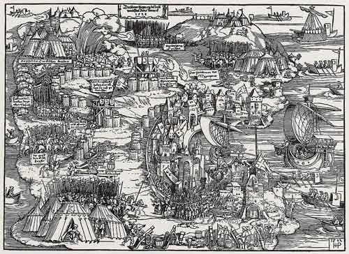

Мы остановились в описании осады Родоса 1522 года на прибытии Сулеймана со своей армией к стенам Родоса.

Прежде всего, попытаемся навести порядок с датами. Как я ранее упоминал, разнобой в датах, взятых из различных источников, значительный. Поэтому возьмем для своего отсчета две даты: дату прибытия турецкого флота к Родосу и начало морской блокады острова – 26 июня 1522 года, и дату прибытия на Родос султана Сулеймана и начало боевых действий турок против госпитальеров – 28 июля 1522 года. Первая дата подтверждается сохранившимся письмом великого магистра де л'Иль Адама своему племяннику (Charrière, Négociations de la France dans le Levant, tome I (1848), p. CXXXI): «…l'armée du Turq, qui dès le xxvie de juing dernier passé nous tient assiégez» . Вторая почти единодушно подтверждается всеми источниками того времени.
И еще раз вернемся к численности сторон.
Ахмед Хафуз, подробно остановившись на численности флота, умалчивает о потенциале сухопутных войск султана. Не говорит он и о числе защитников крепости. Попробуем еще раз пройти по источникам, сообщающим нам количественные данные о противоборствующих сторонах. Начнем с госпитальеров.
Хроникеры отмечают, что когда Филипп Вилье де л’Иль-Адам прибыл на Родос в качестве Великого магистра ордена, он обошел строй рыцарей всех лангов, которые стояли перед своими резиденциями – обержами (на русский иногда переводят как подворье). Было зафиксированы следующие цифры:
Ланги Франции - 140 рыцарей
Ланг Испании и Португалии - 88 «
Ланг Италии - 47 «
Ланги Германии и Англии - 17 «
Итого
После объявления экстренного сбора всех родосских рыцарей и прибытия добровольцев из Европы общее число рыцарей на острове достигло, как было уже сказано, 600 человек. Численность других регулярных формирований ордена на острове не превышала 4500 человек. Отряды горожан-добровольцев по численности не превышали 1500 человек. Интересна также история прибытия на остров в самый последний момент отряда критских лучников численностью 500 человек. Именно на Крите госпитальеры в течение многих лет пополняли ряды своих формирований лучниками, самыми известными в регионе. Задача получить новых бойцов с Крита в сложившейся обстановке была непростой. Венецианцы, которые контролировали остров, всячески противились любым шагам, которые могли бы осложнить их отношения с Османской империей. Чтобы выполнить сложную миссию на Крит был направлен Антонио Босио (дядя известного историка с таким же именем, описавшего осаду Родоса). Несмотря на официальных отказ правителя острова в испрошенном разрешении на вербовку добровольцев для защиты Родоса, Босио сумел набрать 500 лучников, которых скрытно разместил на 15 бригантенах с вином и продовольствием, замаскировав их среди товара и под матросов кораблей эскадры. Что здесь было: ловкость родосского эмиссара или тайный его сговор с правителем Крита, сейчас уже никто сказать не может.
Еще один инцидент, который грозил нанести ущерб обороне острова, удалось урегулировать великому магистру. В итальянском ланге (историки считают, что все было следствием подстрекательства известного уже нам бывшего соперника великого магистра адмирала д'Амарала) начались волнения и появились призывы отправиться в Рим, чтобы потребовать от папы Адриана VI справедливого решения вопроса о незаконном захвате командорств итальянского ланга. Все рыцари-итальянцы погрузились под покровом ночи на суда и отправились в Кандию, на Крит. Де л’Иль-Адам назвал итальянцев дезертирами, а их уход с острова в тяжелый для иоаннитов момент – постыдным предательством. Неизвестно, горькие слова великого магистра, или другие обстоятельства сыграли роль, но все рыцари итальянского ланга вернулись на Родос, попросили прощения за недостойное свое поведение и обязались смыть этот позор кровью. Последующие события показали, что они отважно бились на бастионах Родоса, сдержав свое обещание.
Пока позволяла обстановка, на Родос продолжали прибывать корабли с грузами продовольствия, пороха и боеприпасов. Но делали это рыцари на свой страх и риск. Одобрения и тем более помощи со стороны западноевропейских братьев по вере они не получали.
Основным занятием Великого Магистра в это время была непосредственная организация обороны крепости. Помимо закрепления каждого сектора обороны за отдельными лангами (см. Схему, приведенную ранее), он назначил на каждый сектор обороны командующего:
l° Итальянский бастион был поручен Андело Женти (Andelot Gentil).
2°Сектор Прованса возглавил Беранже де Лионсель (Bérenger de Lioncel).
3°Английский сектор был отдан под командование Николя Узи (Nicolas Huzi).
4°Командовать сектором Испании был назначен Франсуа де Каррьер (François de Carrières).
5°Сектор Оверни подчинялся шевалье дю Месниль (du Mesnil).
Сектора Франции и Германии находились в ведении соответствующих глав лангов французского (Иоахим де Сан Обен – Joachim de Saint Aubin) и германского (Кристоф де Вальднер – Christophe de Waldner). Свои командные функции в рамках созданных командований сохранили и командующие остальных лангов.
Резерв был разделен на четыре отряда. Отряд под командованием Андре д'Амарала обеспечивал безопасность в секторах Германии и Оверни; отряд Жана Бурка – в секторах Испании и Англии; Пьер де Клюи возглавлял резервы на направлении Прованса и Кастилии; четвертый отряд под командованием Габриеля де Поммроля находился в резерве главного командования и мог быть направлен на любой участок, где обстановка могла сложиться не в пользу госпитальеров.
Городское ополчение было сведено в четыре роты общей численностью 600 человек. Они размещались во внутренних районах города.
Оборона форта св.Николая была поручена отважному рыцарю Гюйо де Кастеллану, в подчинении которого находилось 20 рыцарей, 300 солдат и несколько моряков с родосских и иностранных кораблей.
Продолжим в следующий раз.